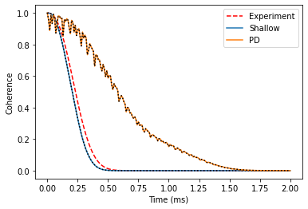

Shallow donor in Si
Example of more complicated simulations, in which we compare the coherence predicted with point-dipole hyperfine couplings and one obtained using the hyperfines from model wavefunction of the shallow donor in Si (P:Si).
[1]:
import numpy as np
import matplotlib.pyplot as plt
import sys
import ase
import pycce as pc
seed = 8800
np.set_printoptions(suppress=True, precision=5)
First, as always, generate spin bath with BathCell instance. To get parameters we use ase interface. It allows to conveniently read structure files of any type.
[11]:
# Generate unitcell from ase
from ase import io
s = io.read('si.cif')
s = pc.bath.BathCell.from_ase(s)
# Add types of isotopes
s.add_isotopes(('29Si', 0.047))
# set z direction of the defect
s.zdir = [1, 1, 1]
# Generate supercell
atoms = s.gen_supercell(200, remove=[('Si', [0., 0., 0.])], seed=seed)
Calculations with point dipole hyperfine couplings
Here we compute Hahn-echo decay with point dipole hyperfine couplings. All of the parameters are converged, however it never hurts to check!
[3]:
# Parameters of CCE calculations engine
# Order of CCE aproximation
CCE_order = 2
# Bath cutoff radius
r_bath = 80 # in A
# Cluster cutoff radius
r_dipole = 10 # in A
# position of central spin
position = [0, 0, 0]
# Qubit levels (in Sz basis)
alpha = [0, 1]; beta = [1, 0]
# Mag. Field (Bx By Bz)
B = np.array([0, 0, 1000]) # in G
# Number of pulses in CPMG seq (0 = FID, 1 = HE etc)
pulses = 1
# Setting the runner engine
calc = pc.Simulator(spin=0.5, position=position, alpha=alpha, beta=beta,
bath=atoms, r_bath=r_bath, magnetic_field=B, pulses=pulses,
r_dipole=r_dipole, order=CCE_order)
[4]:
# Time points
time_space = np.linspace(0, 2, 201) # in ms
For comparison, we compute both with generalized CCE and usual CCE coherence. Note a relatively large bath (r_bath = 80), so the calculations will take some time.
[5]:
l_cce = calc.compute(time_space, method='CCE')
l_gen = calc.compute(time_space, method='gCCE')
Hyperfine couplings of the shallow donor
We compute the hyperfine couplings of the shallow donnor, following the formulae by Rogerio de Sousa and S. Das Sarma (Phys Rev B 68, 115322 (2003)).
[6]:
# PHYSICAL REVIEW B 68, 115322 (2003)
n = 0.81
a = 25.09
def factor(x, y, z, n=0.81, a=25.09, b=14.43):
top = np.exp(-np.sqrt(x**2/(n*b)**2 + (y**2 + z**2)/(n*a)**2))
bottom = np.sqrt(np.pi * (n * a)**2 * (n * b) )
return top / bottom
def contact_si(r, gamma_n, gamma_e=pc.ELECTRON_GYRO, a_lattice=5.43, nu=186, n=0.81, a=25.09, b=14.43):
k0 = 0.85 * 2 * np.pi / a_lattice
pre = 8 / 9 * gamma_n * gamma_e * pc.HBAR_MU0_O4PI * nu
xpart = factor(r[0], r[1], r[2], n=n, a=a, b=b) * np.cos(k0 * r[0])
ypart = factor(r[1], r[2], r[0], n=n, a=a, b=b) * np.cos(k0 * r[1])
zpart = factor(r[2], r[0], r[1], n=n, a=a, b=b) * np.cos(k0 * r[2])
return pre * (xpart + ypart + zpart) ** 2
We make a copy of the BathArray object, and set up their hyperfines according to the reference above.
[7]:
newatoms = atoms.copy()
# Generate hyperfine from point dipole
newatoms.from_point_dipole(position)
# Following PRB paper
newatoms['A'][newatoms.dist() < n*a] = 0
newatoms['A'] += np.eye(3)[np.newaxis,:,:] * contact_si(newatoms['xyz'].T, newatoms.types['29Si'].gyro)[:,np.newaxis, np.newaxis]
Now we set up a Simulator object. Because hyperfines in newatoms are nonzero, they are not approximated as the ones of point dipole.
[8]:
calc = pc.Simulator(spin=0.5, position=position, alpha=alpha, beta=beta,
bath=newatoms, r_bath=r_bath, magnetic_field=B, pulses=pulses,
r_dipole=r_dipole, order=CCE_order)
[9]:
shallow_l_cce = calc.compute(time_space, method='CCE')
shallow_l_gen = calc.compute(time_space, method='gCCE')
Compare the results
We find that the point dipole gives a poor agreement with the experimental data. Model wavefunction, on the countrary, produces great agreement with the experimental coherence time from work of Eisuke Abe et al. (Phys Rev B 82, 121201(R) (2010)).
[12]:
t2exp = 0.27 # Experimental T2 from PhysRevB.82.121201
decay = lambda t: np.exp(-(t/t2exp)**2.4)
plt.plot(time_space, decay(time_space), color='red', label='Experiment', ls='--')
plt.plot(time_space, shallow_l_cce.real, label='Shallow')
plt.plot(time_space, shallow_l_gen.real, ls=':', c='black')
plt.plot(time_space, l_cce.real, label='PD')
plt.plot(time_space, l_gen.real, ls=':', c='black')
plt.legend();
plt.xlabel('Time (ms)')
plt.ylabel('Coherence');

Interesting to note - the decay depends significantly on the orientation of the magnetic field. You can check it yourself!